A tour of every panel, gesture and shortcut in Equation Studio. The README explains what the scenes are and what is or is not reconstructed; this guide explains how to read, understand, explore and edit a construction. Everything runs locally; nothing is uploaded. Hover any control in the app (or press and hold it on a touch screen) for a short explanation of what it does, its shortcut, and whether it is currently on.
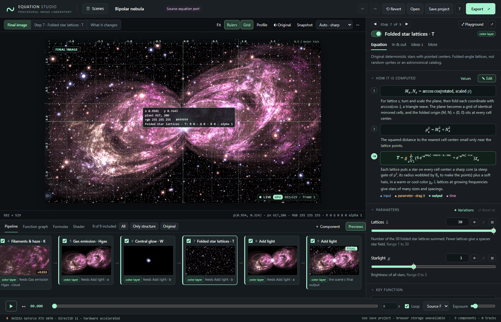
Yes. The canvas is computed on your GPU from the equations every time anything changes: a parameter, a wire, the camera, the playhead. There is no stored picture behind the canvas; the only saved pictures are the small scene thumbnails in the library.
The LIVE badge in the corner of the image shows whether a hardware graphics processor does the work (GPU) or the browser fell back to software rendering (SOFTWARE, in amber), the resolution, the time the last frame took on the GPU, and a frame counter; its dot pulses on each new frame. Click it, or the footer, for the GPU & performance dialog: the graphics processor and API, what it supports (float read-back, background shader compilation, GPU timers), the last frame time, the programs compiled for this scene and how long each took, and how to turn on hardware acceleration if it is off. Web pages cannot use a neural processing unit (NPU) for this kind of per-pixel work, so the GPU is the accelerator that matters.
When you change the wiring, add a component or apply an equation, the scene’s shader is recompiled in the background: the previous image stays up with a Compiling shader… indicator and a progress cursor, and the page keeps responding. Everything else (parameters, ticking components, choosing what the canvas shows) never recompiles.
| Area | Where | What it is for |
|---|---|---|
| Top bar | top | ☰ Scenes opens the library; the scene’s title and its provenance label; undo and redo, Revert, Open, Save, help and Export |
| Canvas | center | The live image; above it, what it shows (Final image, This step, What it changes) and its tools |
| Pipeline | under the canvas | The construction step by step, with a live picture of every step’s output; tabs switch to the Function graph, the Formulas and the Shader |
| Component panel | right | The selected component: its equation, what goes in and out, the ideas behind it, and every control |
| Timeline | bottom | Play, scrub, duration, output conversion and exposure; a lane for every animated parameter |
The library is a drawer: ☰ Scenes (or ＋
Component in the pipeline bar) opens it over the left of the
window, and it closes when you choose something, click elsewhere or
press Esc. ⇥ Dock keeps it open as a
column instead. Drag the component panel’s left edge to make it wider or
narrower, and the bar above the pipeline to give it more height;
double-click either to reset.
[ and
], or the arrows, move to the previous and next step.Clicking a component selects it, wherever it is: a
pipeline card, a graph card, a formula block, an input or output in the
panel. Selecting never changes what the canvas shows: if the canvas
shows the final image, it keeps showing it while the panel explains the
component. Choose This step (I) to see the
selected component’s own output, or What it changes
(C) to see its effect; both then follow your selection as
you click around or step with [ ].
Final image (Esc) returns.
Double-click a component to study it in the Equation Playground.
The Pipeline lists every component in evaluation order, each after everything it reads. Each card shows a checkbox to include or bypass the component, its step number and label, a live thumbnail of its output, its output type and what it feeds, FINAL or UNUSED where they apply, 👁 when the canvas shows it, and ✎ when its equation has an edit that is not applied yet. Thumbnails of values that have no color of their own use the same automatic colors as the canvas (see below), each over its own range; a layer shown with adjusted exposure is labelled with the factor, e.g. ×0.033.
Click a card to select it; the checkbox alone includes or bypasses it. The arrow keys move between cards when one has focus. The bar above the cards holds the bypass shortcuts (see Including and bypassing).
The switch above the canvas chooses what the canvas shows:
Esc): the scene’s
finished output, the same image Export and Save use.I): only the selected
component’s output, before anything downstream uses it. The button names
the step, e.g. Step 2 · Pinched shell family.C): the final image
rendered with and without the selected component (bypassed). Changed
pixels in color keeps the image where the component matters and
turns the rest gray; Signed difference is warm where it adds
light and cool where it removes light.In the step and change views the canvas follows your selection. Press 🔓 to lock it, e.g. to watch a field while you tune something upstream of it; select another component and the canvas stays where it is until you unlock.
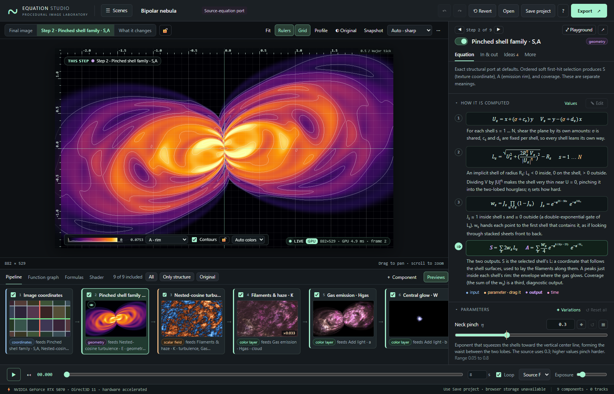
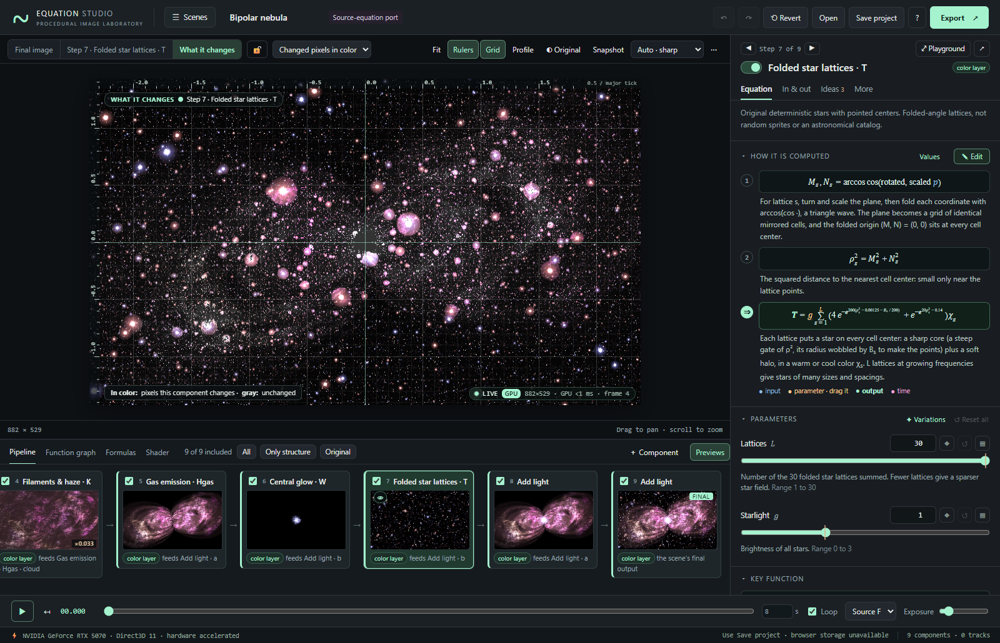
Colors, layers and lights appear as themselves. Numbers, coordinates and geometry have no color of their own, so the canvas chooses one from the values actually in view, and the legend at the lower left explains it:
| Output type | Automatic colors | Legend |
|---|---|---|
| scalar field | a colormap from the lowest to the highest value; when the field takes both signs, a diverging map: cool below zero, near-black at zero, warm above, symmetric about zero. White contour lines where the field crosses round values; the zero line is brighter | a color bar with the range and a histogram of the values in view |
| coordinates | the image of a regular grid: each cell of the output coordinates keeps its own pastel color, gray lines at multiples of the cell size, red where q_x = 0 and green where q_y = 0. A warp bends the grid; polar coordinates turn it into rings and spokes | the cell size |
| geometry | one channel as a scalar field: S (the shell-following coordinate), A (the rim) or coverage; or all three in the classic red/green/blue | a channel menu |
| color layer | as displayed, unless it is almost entirely clipped white or black at the scene exposure: then its exposure is adjusted so its structure is visible | the factor, e.g. ×0.033 exposure |
The legend’s controls choose the channel, contours, auto exposure and Classic colors (the fixed 1.x diagnostic: gray = ½ + ½·tanh(value); red/green = ½ + ½ sin of the coordinates; red rim, green coverage, blue warp). 🔓 locks the current color range, so you can change a parameter and compare colors fairly. On a narrow image the controls fold behind ⚙. The rulers’ readout and the profile give the exact numbers behind any color.
Rulers (R) and Grid
(G) are on by default. The rulers show world coordinates
with a 1–2–5 tick spacing that adapts to the zoom; the top-right corner
shows the size of a major tick. The crosshair follows the cursor with
the world coordinate, the pixel, the displayed color and the raw
value of the shown component (in the step view) or the selected
component (otherwise). Click the image to pin the
reading; it stays and updates as you edit or scrub.
Unpin or Esc removes it. Alt-click reads
one raw value into a message. Rulers, grid, readouts and labels are
never part of an export.
Profile (V) opens a plot under the
canvas of the shown component’s actual values along the
horizontal (or vertical) line through the cursor, or through the pinned
reading. A dashed line on the image shows where it samples. Scalars plot
one curve, coordinates their x and y, geometry S, A and coverage, layers
their red, green, blue radiance (before exposure and tone mapping) and
coverage. Below the plot are each channel’s minimum, maximum and mean
along the line. The profile makes a function’s shape obvious: a Gaussian
ring’s bump, a threshold’s step, the zigzag of a fold, the spikes of
stars.
Formulas writes the whole construction out as a formula sheet. At the top, the image, composed: the combiners (Add light, Front over back, Tint, Mask, Combine scalar fields) written as operations over the components they combine, e.g.
image = Gas emission + Central glow + Folded star lattices
Below it, every component in evaluation order, with each input bound to the component that feeds it (p ← Image coordinates · S, A ← Pinched shell family), its equation, and where its output goes (→ Add light as B). Hover a line for its explanation; click a block to select that component.
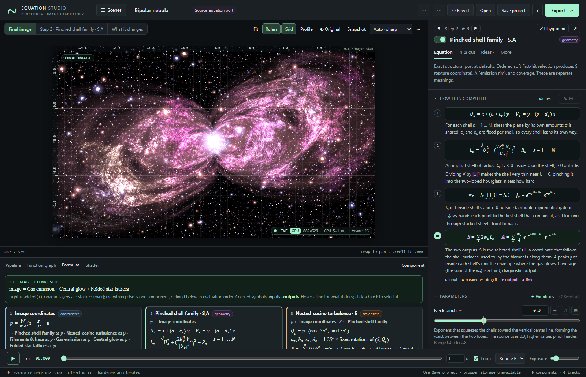
Drag to pan. Scroll or pinch to zoom about the point under the
cursor. Fit (F) restores the native
framing; at 2000 × 1200 the canvas reproduces the supplied source grid
exactly. The camera is part of the project and is saved and undone like
any other edit.
The quality menu sets how many pixels the canvas computes. Auto · sharp (the default) matches your display, including high-density screens; during a drag or playback, when frames take longer than about 24 ms on the GPU, it renders at a lower resolution and refines when you let go. The fixed sizes render exactly that width. Every setting evaluates the same equations; exports choose their own size.
The panel on the right explains and edits the selected component. Its header stays in view while you scroll: ◀ Step 7 of 9 ▶, the switch that includes or bypasses it (see below), its title (editable; the id stays fixed) and output type, ⤢ Playground and ↗ (pop out). Under it, four tabs; the panel keeps the tab you chose as you select other components, and starts each component at its top.
Sections fold with the ▸ in their heading.
⤢ Playground (E, the button in the
panel’s header, or double-click any component) turns the panel into a
workspace for studying one component: the panel widens to half the
window, and on a wide screen its Equation tab gets two columns, the
steps on one side and the parameters and key function on the other. The
canvas shows the component’s own output with the
profile of its values under it, and the pipeline
becomes a compact strip of step names, so the canvas keeps its height.
Nothing else moves: you still navigate with the strip, [
] or ◀ ▶. Esc first returns the canvas to the
final image, then closes the Playground; ⤢ or E closes it
at once.
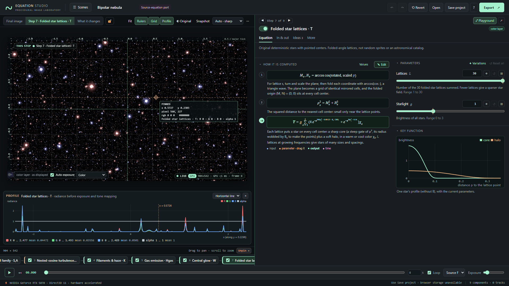
↗ opens the panel for the selected component in a
separate browser window, for example on a second screen next to a
full-size canvas. It follows your selection; tick Pin
to keep it on one component while you select others. Its controls change
the scene in the main window, and Ctrl/⌘ Z undoes there
too. The window closes with the page. If the browser blocks pop-ups, the
Playground opens instead; phones and tablets, which open no second
windows, hide ↗ and use the Playground.
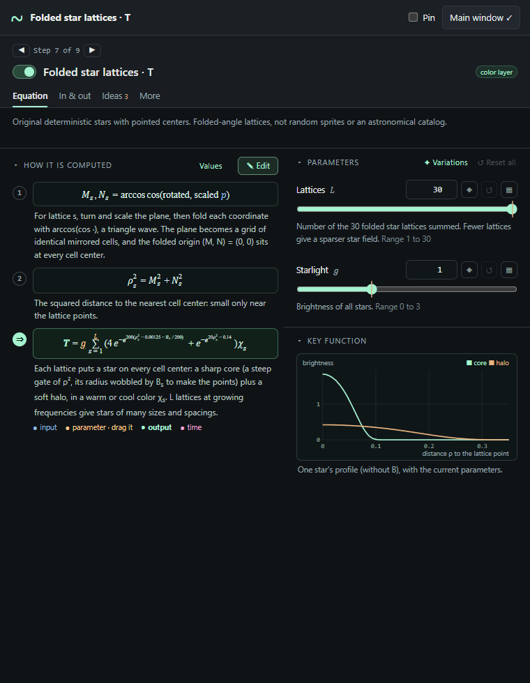
Every component whose inputs are numbers or coordinates can be edited as an equation: the custom components, and the built-in components that do not read color layers or geometry. The same three steps work for all of them:
param lines named after
their symbols (κ becomes kappa, c_x stays c_x)
at their current values.Ctrl/⌘ Enter) puts it into the
scene as one undo step; Cancel discards it. An equation
with an error is not applied, and nothing else changes. A built-in
component becomes your equation when you apply: it keeps its wiring,
parameter values and animation, and its label gets “· equation”; Undo
restores the original.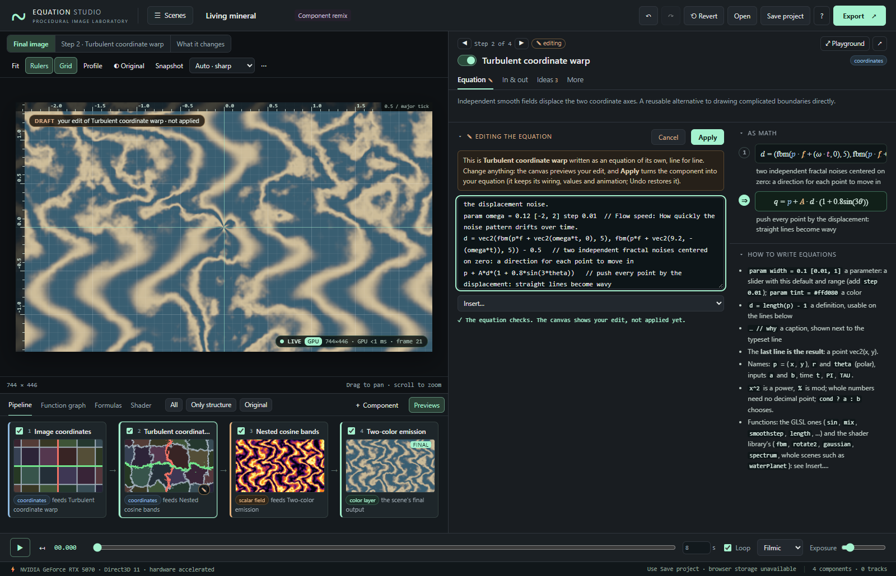
When you apply, a parameter keeps its current value if its
param line is unchanged; if you edit its default
(param bands = 14 to = 30), it takes the new
default. Parameters that no longer exist are dropped with their
animation.
Components that read a color layer or geometry (tint, mask, the combiners, most of the source nebula) cannot be written as equations yet; their ✎ Edit is dimmed and says why. Some built-in components are loops over many terms (the star lattices, the nebula clouds, whole scenes such as the water planet): their equation is a call of the shader-library function that does the loop, whose code is under More ▸ Shader code. You can still change what goes into it and what comes out.
An equation is a short program, one statement per line:
// A glowing ring (lines starting with // are ignored)
param radius = 1 [0.1, 3] // distance of the rim from the center
param width = 0.1 [0.005, 1] // thickness of the rim
d = length(p) - radius // signed distance to the circle
exp(-(d / width)^2) // a Gaussian bump across it: the resultparam name = value [min, max] adds a
parameter with a slider (step 0.01 after
the range sets its step). It behaves like any other parameter: reset,
sweep, keyframes, variations. param tint = #ffd080 adds a
color.name = expression is a definition,
usable on the following lines.vec2(…) for a coordinate equation, a color
vec3(…) (or vec4(…) with coverage) for a color
equation.// … after a line is its caption,
shown next to the typeset line in How it is computed.Available names: p = (x, y),
its polar radius r and angle theta, the
optional inputs a and b, the time
t, PI and TAU. You can call the
GLSL built-in functions (sin, mix,
smoothstep, length, clamp, …) and
every function of the shader libraries: helpers such as
fbm, noise2, rotate2,
gaussian, cutoff, softInside,
spectrum, vortex, domainWarp,
angularMirror, and whole kernels such as
waterPlanet(p, 1, 0.6, 5, 2, t) or
nebulaStars(p, 30, 1). The Insert… menu
under the editor lists them with their arguments, and How to write
equations beside it summarizes the rules. Whole numbers need no
decimal point; x^2 is a power (written out as
x·x, so it is exact for negative x);
% is mod; comparisons,
&&, || and cond ? a : b
work as in GLSL. Equations are checked and re-printed as shader code by
the studio, never pasted into it, and they cannot contain loops or
JavaScript.
To start from scratch, add a Custom scalar, Custom coordinate or Custom color equation (＋ Component); each starts from a short example with a slider, a definition and captions.
Nothing you try is hard to take back:
O, to see the scene as it was when you opened it.Ctrl/⌘ Z,
Ctrl/⌘ Shift Z) cover every edit, including the camera,
bypass checkboxes, dragged symbols and applied equations.S) bookmarks the project and
playhead in the library’s Snapshots tab. Up to thirty are kept in this
browser; they are not part of the saved file.▦ on a parameter opens the explorer below the canvas with the image rendered at seven values across the parameter’s whole range. ✦ Variations renders eight random variations of the component’s parameters (or the whole scene’s), subtle, medium or bold; ⟳ Shuffle makes new ones. Hover a thumbnail to preview it on the main canvas (labelled PREVIEW), click it to use it. The thumbnails use the current view, so a sweep while showing a step shows how that step changes.
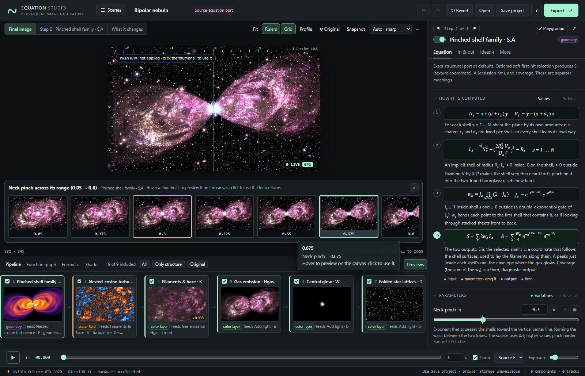
Every component has a checkbox, on its pipeline card, its graph card and as the switch in the panel. Unticking it bypasses the component: a modifier (a coordinate map, a Tint, Mask or Soft threshold) passes its input through unchanged; a combiner passes its main input (Add light passes A, Front over back the back layer, Combine scalar fields a); content (a field, shape, light or star field) contributes nothing. The tooltip on each checkbox says exactly what that component will do when bypassed. Ticking a component also ticks anything it needs. In the pipeline bar, All includes everything, Only structure bypasses every content component so you can tick them one at a time and watch the image build up, and Original restores the scene’s own choice.
Bypassing is instant: it never recompiles the shader.
＋ Component opens the library at its Components tab: every building block, with a live search. Hover an entry to see its description and typeset equation. Click it to add it (its inputs connect to the selection when the types match; the new component is selected and the canvas shows its output, This step), or drag it onto the graph, onto an input dot (added and wired into that socket), onto a component card (wired into its first compatible input) or onto the canvas. Dock the library first when you want to drag several.
In the panel’s In & out tab, ＋ on a connected input inserts a modifier between that input and whatever feeds it; More ▸ Replace with… swaps the component for another with the same output type, keeping connections wherever the sockets match. The Filament ring scene is the Bipolar Nebula with its geometry replaced exactly this way.
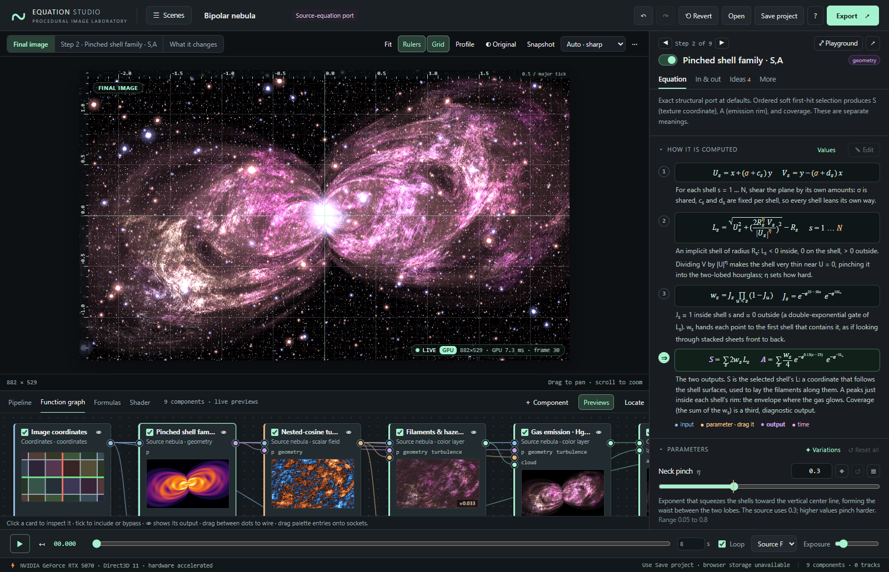
The Function graph tab shows the wiring, laid out
automatically by dependency depth. Cards carry a colored edge and dots
by type: blue coordinates, amber scalars, violet geometry, green layers.
Each card has an include checkbox, a 👁 button that selects it and shows
its output (This step) and, with Previews on
(P), a live thumbnail. Hover a card to dim everything
unrelated to it. Drag from an output dot to an input dot to wire them
(compatible sockets light up), or click one and then the other; drag a
wire off an input to disconnect it. Connections that would form a cycle
or mix types are refused. Locate (L)
scrolls to the selected card; with the graph focused,
Delete removes the selected component and
Ctrl/⌘ D duplicates it.
The Shader tab shows the fragment shader for the
current view, with each component’s statement labelled by its id and its
parameters named n3_radius. Copy GLSL
copies it.
Space plays and pauses; ↤ rewinds; , and .
step one frame at 24 fps; Home and End jump to
the ends. The duration, Loop, output conversion
(Source, Filmic, Linear) and exposure are project settings.
Click ◆ next to a parameter to add a key at the playhead. After that, changing the parameter at another time adds or updates a key there. Each keyed parameter gets a lane in the timeline: click the lane to seek, click a key to jump to it, and drag a key to retime it. In the panel’s More tab, choose smooth, linear or hold interpolation, or delete keys and tracks. Parameters declared in an equation animate the same way. See Animation for the interpolation rules and export determinism.
Export renders a still PNG at any size up to the GPU limit (with the full project embedded as metadata), a deterministic PNG sequence in a ZIP with the project and a manifest, or a real-time browser video. When the canvas shows a step or a “what it changes” view, a checkbox exports that view instead of the final image, in the colors the canvas shows (a step keeps the color range it has on the canvas for every frame). Details and limits are in Animation and export.
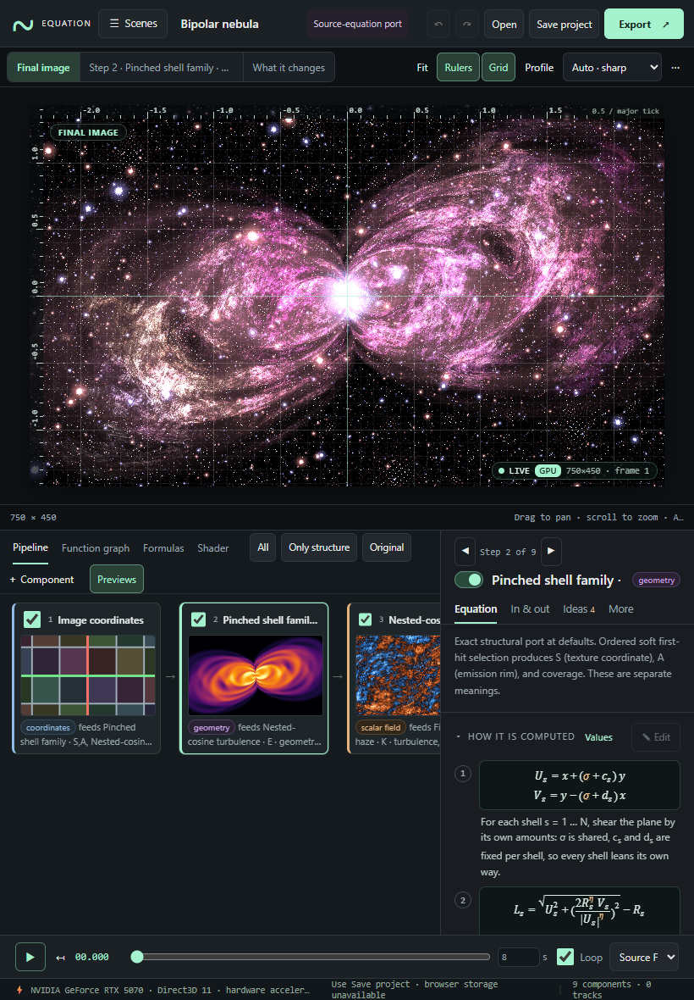
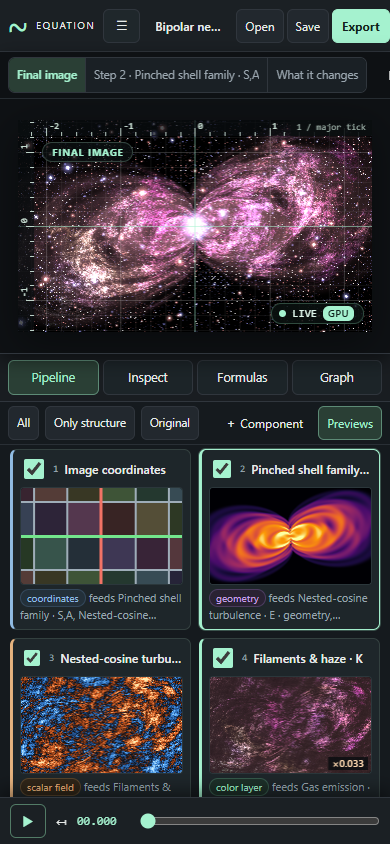
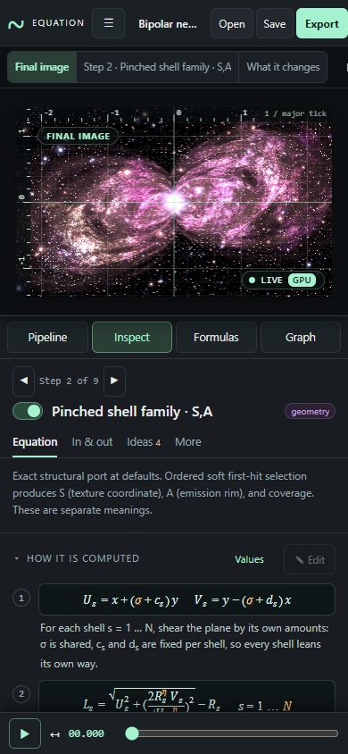
Single-key shortcuts apply when no text field or dialog has focus.
| Keys | Action |
|---|---|
Space |
Play / pause |
Home / End |
Go to the start / end |
, / . |
Step one frame back / forward |
[ / ] |
Select the previous / next component (the canvas keeps its view) |
I |
Show the selected component’s own output, This step (again: the final image) |
C |
Show what the selected component changes |
E |
Open or close the Equation Playground |
V |
Show or hide the profile |
Esc |
Back out one level: close the library, cancel a connection, close the explorer, unpin a reading, leave an unchanged edit, return to the final image, close the Playground |
hold O |
Compare with the original scene |
P |
Toggle live previews |
R / G |
Toggle rulers / grid |
F |
Fit the camera |
S |
Take a snapshot |
L |
Locate the selected component in the graph |
Ctrl/⌘ Z, Ctrl/⌘ Shift Z |
Undo, redo |
Ctrl/⌘ S |
Save the project JSON |
Ctrl/⌘ D |
Duplicate the selected component |
Ctrl/⌘ Enter |
Apply the equation being edited |
Delete / Backspace |
Delete the selected component (graph focused) |
Alt-click canvas |
One-off raw value |
The project autosaves to this browser’s storage a moment after every edit, together with the scene as it was opened (so Original, reset and Revert still work after a reload). Preferences are stored the same way: quality, rulers, grid, previews, profile, step colors, the bottom tab, the pipeline height, the panel widths, the Playground and whether the library is docked. So are snapshots. Unapplied equation edits are not saved. Browser storage can be unavailable or cleared, so Save project remains the portable backup. Reference images are never stored.